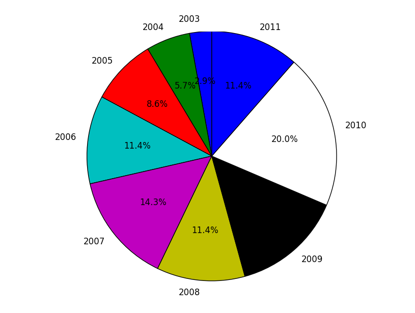
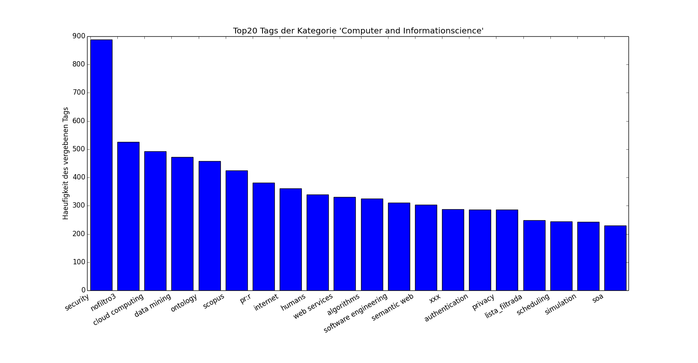
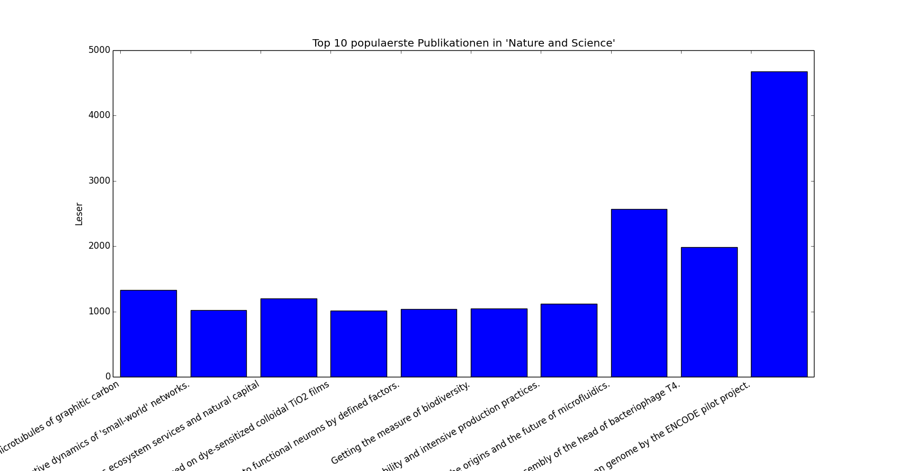
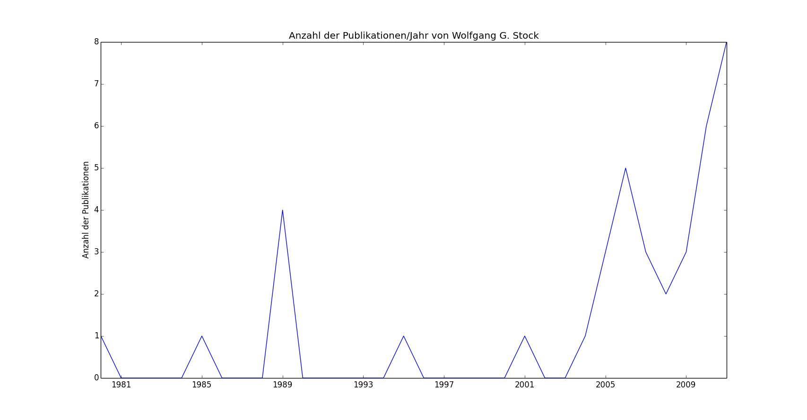
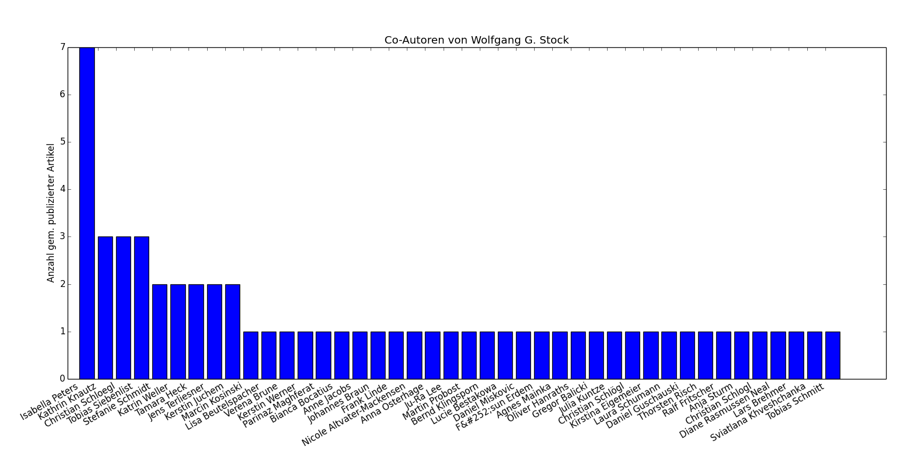

Mit dem vorliegenden Programm werden Publikationen in Mendeley informetrisch untersucht. Als Basis für den Datensatz dient das Literaturverwaltungsprogramm Mendeley. Mendeley beinhaltet nicht nur eine Desktopversion zum Verwalten von Referenzen und PDF-Dateien, sondern auch ein soziales Online-Netzwerk für den Austausch und Kollaborationen zwischen Forschern. Das Programm greift auf die Publikationsdaten über die Mendeley-API zu, wertet sie aus und visualisiert sie mit Hilfe von Matplotlib.
Folgende Daten von den Mendeley-Servern gesammelt und visualisiert:
Verteilung der Publikationen auf die letzten 10 Jahre
Top 20 Tags in der Kategorie „Computer and Information Science“
Top 10 Publikationen aus der wissenschaftlichen Zeitschrift „Nature“
Special: Publikationen von Prof. Wolfang G. Stock
- Publikationsanzahl pro Jahr
- Co-Autoren Ranking
Häufigkeit des Tags „ontology“ in allen Kategorien im Jahr 2011
Wird das Programm direkt ausgeführt werden zunächst alle Daten über die Mendeley-API gesammelt. Dabei wird davon ausgegangen, dass sich eine Datei “config.json” im gleichen Verzeichnis befindet. Hierfür kann “bsp config.json” entsprechend angepasst und umbenannt werden.
Unter Umständen kann die Datensammlung das Limit der Mendeley-API ausreizen. Ist dies der Fall müssen zunächst einzelne Abschnitte auskommentiert werden. Die Datensammlung wird im Code durch den Kommentar # ### Collect the required data ### eingeleitet.
Die gesammelten Daten werden autmatisch zwischengespeichert, sodass nicht bei jedem Programmaufruf auf die API zugegriffen werden muss. Um die zwischengespeicherten Daten zu verwenden, kann die gesammte Datensammlung auskommentiert werden (markiert durch # ### Collect the required data ###). Das Programm wird bereits mit Daten vom 17 Dezember 2013 ausgeliefert. Die Rechte dieser Daten liegt bei Mendeley.
Verteilung der Publikationen auf die letzten 10 Jahre
Das Kreisdiagramm zeigt die Verteilung der Publikationen, welche in den Jahren von 2003 bis 2012 veröffentlicht wurden, in Prozent an. Bisher wurden im Jahr 2010 die größte Anzahl an Publikationen in Mendeley verzeichnet (20%). Die Anzahl an Publikationen nimmt bis zum Jahr 2003 hin ab - die in diesem Jahr veröffentlichten Publikationen machen nur 2,9% aus.

Top 20 Tags in der Kategorie „Computer and Information Science“
Die Top 20 Tags in der Kategorie „Computer and Information Science“ werden durch ein Balkendiagramm dargestellt. Der am meisten für Dokumente vergebene Tag in dieser Kategorie ist mit großem Abstand „security“ gefolgt von „nofiltro3“ und „cloud computing“.

Top 10 Publikationen aus der Zeitschrift „Nature“
Dieses Diagramm visualisiert die gesammelten Daten zu den Publikationen aus der Zeitschrift „Nature and Science“ mit den meisten Lesern. Die x-Achse zeigt die Namen der jeweiligen Publikation während die y-Achse die Anzahl der Leser anzeigt.

Publikationen von Prof. Wolfang G. Stock: Publikationsanzahl pro Jahr
Der Graph veranschaulicht die Anzahl der von Professor Wolfgang G. Stock veröffentlichten Dokumente über die Jahre. Es ist deutlich erkennbar, dass die Anzahl der Publikationen seit 2009 stark angestiegen ist. Mit 8 Publikationen hat Professor Stock bisher die meisten Publikationen im Jahr 2010 veröffentlicht, wenn man die Daten aus Mendeley auswertet.

Publikationen von Prof. Wolfang G. Stock: Co-Autoren Ranking
Das Diagramm zeigt alle Forscher, die mit Professor Stock zusammen veröffentlicht haben. Er hat mit zahlreichen Co-Autoren publiziert, wobei am häufigsten eine Zusammenarbeit mit Frau Isabella Peters (7 mal) verzeichnet wurde. Platz zwei bis vier belegen Kathrin Knautz, Christian Schloegl und Tobias Siebenlist mit jeweils drei Kollaborationen. Mit den meisten Autoren hat Professor Stock jedoch nur einmal zusammen gearbeitet.

Häufigkeit des Tags „ontology“ in allen Kategorien im Jahr 2011
Bei Mendeley gibt es 25 thematische Kategorien, in denen die Einträge abgelegt werden können. Folgende Kategorien wurden durchnummeriert und auf die Häufigkeit des Tags „ontology“ untersucht:
- Arts and Literature (1)
- Astronomy / Astrophysics / Space Science (2)
- Biological Sciences (3)
- Business Administration (4)
- Chemistry (5)
- Computer and Information Science (6)
- Earth Sciences (7)
- Economics (8)
- Education (9)
- Electrical and Electronic Engineering (10)
- Engineering (11)
- Environmental Sciences (12)
- Humanities (13)
- Law (14)
- Linguistics (15)
- Management Science / Operations Research (16)
- Materials Science (17)
- Mathematics (18)
- Medicine (19)
- Philosophy (20)
- Physics (21)
- Psychology (22)
- Social Sciences (23)
- Sports and Recreation (24)
- Design (25)
Das Diagramm zu dieser Auswertung zeigt, wie oft der Tag „ontology“ in jeder der 25 Kategorien vorhanden ist. Es wird sofort deutlich, dass der Tag am häufigsten in der Kategorie „Computer and Information Science“ vergeben wird.
Speichert einen beliebigen Datentyp p_object als eine Pickle-Datei mit dem Dateinamen filename.py. filename sollte als String übergeben werden.
Öffnet eine zuvor mit save_as_pickle() erstellte Pickle-Datei, bzw. eine beliebe Pickle-Datei, die genau einen (verschachtelten) Datentyp enthält. Der Name der Datei wird durch filename bestimmt.
Zeichnet ein Balkendiagramm für einen bestimmten Datensatz (definiert über die Parameter). Eine Liste von Strings als Parameter names bestimmt die Labels der x-Achse, values eine Anzahl von Daten in Form einer Liste. Die Beschriftung der y-Achse wird durch einen String ylabel bestimmt. Das Parameter title gibt den Titel des Diagramms in Form eines Strings an.
Zeichnet ein Kreisdiagramm für einen bestimmten Datensatz (definiert über die Parameter). Eine Liste von Strings als Parameter names, bestimmt die Labels jedes Teilstücks des Kreisdiagramms, values ist eine Liste von Daten in Form von Integern.
Zeichnet eine Timeline für einen bestimmten Datensatz (definiert über die Parameter). Eine Liste von Strings als Parameter names bestimmt die Labels der x-Achse, values eine Anzahl von Daten in Form einer Liste. Die Beschriftung der y-Achse wird durch einen String ylabel bestimmt. Das Parameter title gibt den Titel des Diagramms in Form eines Strings an.
Da hier einmalig spezifische Daten gesammelt werden, erscheint ein modularer Aufbau für die Datensammlung wenig sinnvoll. Dementsprechend werden die folgenden Abfragen direkt bei Programmaufruf ausgeführt.
Die gesammelten Daten werden jeweils mit save_as_pickle() als Pickle-Datei gespeichert.
Verteilung der Publikationen auf die letzten 10 Jahre
In mehreren Durchläufen (ein Durchlauf pro Jahr) werden alle Publikationen gesucht, die in dem entsprechenden Jahr erschienen sind.
overall_pub = {} for i in range(2003, 2013): overall_pub[i]=mendeley.search("year:%s"%i)["total_results"] save_as_pickle(overall_pub, "overall_pub")Die Mendeley-API gibt hier die Gesamtanzahl von Publikationen in der Ergebnismenge an. Diese Information als Wert bildet zusammen mit dem Jahr als Schlüsssel einen Eintrag in einem Dictionary.
Top 20 Tags in der Kategorie „Computer and Information Science“
Die Mendeley-API ermöglicht Zugriff auf Statistiken für Tags bestimmter Kategorien. Die Kategorie wird als ID (hier 6) übergeben.
top20tags = mendeley.tag_stats(6) save_as_pickle(top20tags, "top20tags")Die IDs der einzelnen Kategorien können über die API abgefragt werden.
categories = mendeley.categories()
Top 10 Publikationen aus der „Nature“
Die Mendeley Suche mit “published_in:” als Suchparameter gibt standardmäßig Publikationen sortiert nach Leseranzahl zurück.
search_nature = mendeley.search("published_in:\"Nature\"", items=10)Um die Daten visualisieren zu können, müssen zusätzlich noch die Leser jeder Publikation bestimmt werden. Mendeley gibt diese Information über über die Methode ”.details” an. Parameter ist eine spezielle UUID der jeweiligen Publikation.
top10_nature = {} for elem in search_nature["documents"]: top10_nature[elem["title"]] = mendeley.details(elem["uuid"])["stats"]["readers"] save_as_pickle(top10_nature, "top10_nature")
Special: Publikationen von Prof. Wolfang G. Stock
Die Mendeley-API bietet zwar eine spezielle Methode für die Autorensuche an, allerdings ermöglicht diese keine Suche nach exaktem Autorennamen. Stattdessen wird die normale Suche mit “authored:” als Suchparameter verwendet. Die Anführungszeichen erzwingen exakte Übereinstimmung.
pub_stock = mendeley.search("author:\"Wolfgang G Stock\"", items=500) save_as_pickle(pub_stock, "pub_stock")Die weitere Verarbeitung erfolgt direkt bei der Visualisierung. Alle notwendigen Informationen befinden sich in der Ergebnismenge (Publikationsanzahl pro Jahr und Co-Autoren Ranking).
Häufigkeit des Tags „ontology“ in allen Kategorien im Jahr 2011
Für jede Kategorie in Mendeley wird die Häufigkeit des Tags “ontology” bestimmt. Hierfür wird zunächst für jede Kategorie ein Eintrag in einem Dictionary onto_tagged mit initial 0 als Zählwert vorgenommen. Dann werden alle passenden Tags in der jeweiligen Kategorie abgefragt. Da die Mendeley-API Documentmengen ab einer gewissen Größe auf mehrere Seiten aufteilt, muss entsprechend der Seitenzahl mehrmals abgefragt werden. Für jeden Eintrag in der Ergebnismenge mit 2011 als Publikationsjahr, wird der Zahlenwert für die Kategorie im Dictionary onto_tagged um 1 erhöht.
onto_tagged = {} for category in categories: cat_id = category["id"] onto_tagged[cat_id] = 0 page_count = mendeley.tagged("ontology", cat=cat_id, items=100)["total_pages"] for page_num in range(1, page_count+1): tagged = mendeley.tagged("ontology", cat=cat_id, items=100, page=page_num) for document in tagged["documents"]: if document["year"]==2011: onto_tagged[cat_id] += 1 save_as_pickle(onto_tagged, "onto_tagged")
Folgende Module fanden neben der Python Standard Library Verwendung:
Alle Daten wurden mithilfe von Mendeley gesammelt:
{kind=link}
{kind=link}
{kind=link}
{kind=link}
{kind=link}
{kind=link}